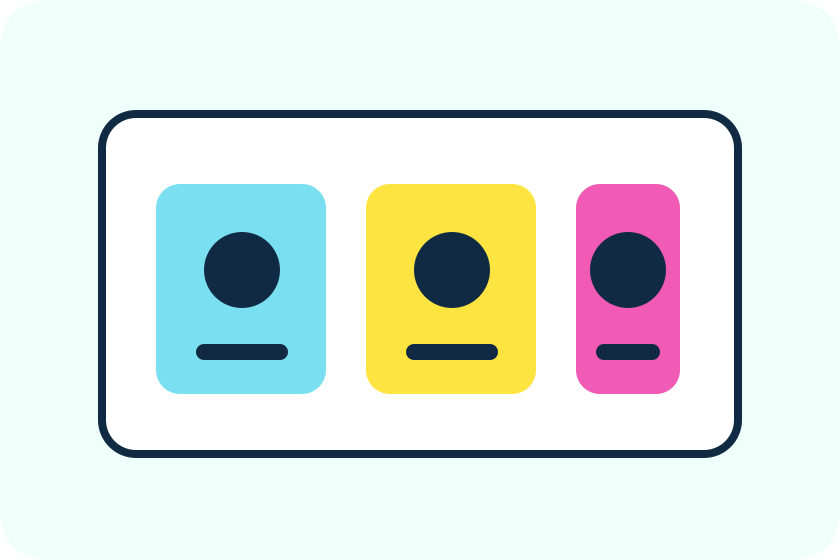

Mục tiêu học tập
Phát triển khả năng tổ chức dữ liệu, tìm kiếm thông tin, viết prompt, hợp tác trực tuyến, sáng tạo nội dung số và đánh giá các vấn đề đạo đức khi sử dụng AI.
Portfolio kỹ thuật số
Sinh viên Trường Đại học Công nghệ · Mã sinh viên: 25021911
Portfolio này tổng hợp quá trình học tập, rèn luyện kỹ năng số và ứng dụng trí tuệ nhân tạo trong học phần Nhập môn Công nghệ số và Ứng dụng Trí tuệ nhân tạo. Nội dung được trình bày theo ba phần: giới thiệu cá nhân, hệ thống dự án học tập và phần tổng kết quá trình thực hiện.
Thông tin cá nhân
Tôi là Đỗ Trọng Nghĩa, sinh viên năm nhất tại Trường Đại học Công nghệ, Đại học Quốc gia Hà Nội. Với định hướng theo đuổi các lĩnh vực chuyên sâu như Trí tuệ nhân tạo và An toàn thông tin, tôi đặc biệt quan tâm đến công nghệ số và các công cụ hỗ trợ học tập hiện đại. Mục tiêu của tôi là xây dựng nền tảng tư duy lập trình vững chắc, biết khai thác thông tin đúng cách và sử dụng AI một cách có trách nhiệm.
Phát triển khả năng tổ chức dữ liệu, tìm kiếm thông tin, viết prompt, hợp tác trực tuyến, sáng tạo nội dung số và đánh giá các vấn đề đạo đức khi sử dụng AI.
Hệ thống hóa sản phẩm học tập thành một hồ sơ cá nhân có cấu trúc rõ ràng, giao diện thống nhất và thể hiện được quá trình tiếp thu kiến thức trong học phần.
Dự án học tập
Các dự án dưới đây thể hiện những kỹ năng chính đã được hình thành trong quá trình học tập, từ quản lý dữ liệu cá nhân đến sử dụng AI có trách nhiệm.
Bài tập tập trung vào việc xây dựng cấu trúc thư mục khoa học, đặt tên tệp nhất quán và tổ chức dữ liệu học tập theo từng nhóm nội dung.
Bài tập thể hiện khả năng sử dụng từ khóa, toán tử tìm kiếm nâng cao và tiêu chí đánh giá độ tin cậy của nguồn thông tin học thuật.
Bài tập so sánh prompt ban đầu và prompt cải tiến, từ đó rút ra cách đặt yêu cầu rõ ràng, có bối cảnh, vai trò, định dạng và tiêu chí đầu ra.

Bài tập trình bày cách sử dụng công cụ trực tuyến để lập kế hoạch, phân chia công việc, theo dõi tiến độ và phối hợp trong môi trường số.
Bài tập ứng dụng AI tạo sinh để hỗ trợ lên ý tưởng, xây dựng nội dung và hoàn thiện một sản phẩm số mang tính sáng tạo.
Bài tập xây dựng bộ nguyên tắc cá nhân khi sử dụng AI trong học tập, nhấn mạnh tính trung thực, kiểm chứng thông tin và bảo vệ dữ liệu.
Tổng kết
Sau khi hoàn thành Portfolio, tôi đã hệ thống lại được các kiến thức và kỹ năng quan trọng trong học phần. Quá trình thực hiện giúp tôi hiểu rõ hơn cách tổ chức dữ liệu, tìm kiếm thông tin, sử dụng công cụ trực tuyến, viết prompt hiệu quả và vận dụng AI theo hướng có trách nhiệm.
Nắm vững tư duy khai thác tài nguyên số, nguyên lý hoạt động cơ bản của các mô hình AI tạo sinh và tầm quan trọng của việc bảo mật thông tin trên không gian mạng.
Rèn luyện tư duy logic khi đưa ra các câu lệnh (prompt engineering), khả năng tự học, nghiên cứu độc lập và trình bày thông tin mạch lạc, trực quan.
Ban đầu gặp khó khăn trong việc chọn lọc thông tin từ AI do có hiện tượng "ảo giác" (hallucination). Cách khắc phục là luôn ứng dụng kỹ năng tìm kiếm chéo (cross-check) để xác thực tính chính xác của dữ liệu.
Kết hợp các kỹ năng số đã học cùng nền tảng lập trình (như Java) và tư duy thuật toán để phục vụ trực tiếp cho các dự án nghiên cứu về AI và An toàn thông tin trong những năm học tiếp theo.